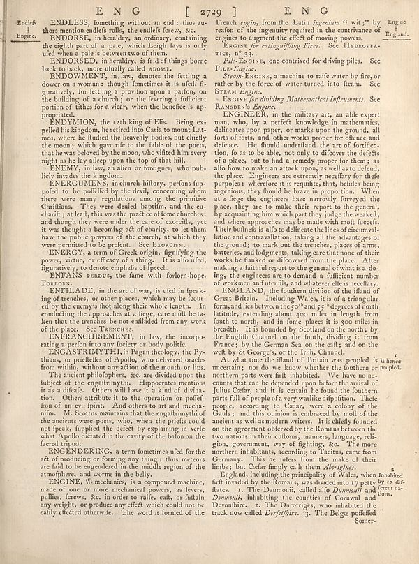

Scan ID britannica:309f765b1ecc83e0a7f7762e44b4a927a7555443:train:523
Image SHA-256 a583606e375ad92d79af8ad8b4fabc4fa22632e6ccbeea6e20f0fa47a27e2858
Status: ok. Running header: EN G [ 2729] E N G (catchword). Removed page furniture: Page-header: EN G [ 2729] E N G.
PDF · raw Parse reply · LaTeX
Entries: E0029 ENDLESS ENDORSE ENDORSED ENDOWMENT ENDYMION ENEMY ENERGUMENS ENERGY ENFANS PERDUS ENFILADE ENFRANCHISEMENT ENGAS TRIMYTHI ENGENDERING ENGINE STEAM-ENGINE ENGINEER ENGLAND

| # | Class | Box | Parse 3.5 | Used text | Source |
|---|---|---|---|---|---|
| 1 | Text | [0.04, 0.0328, 0.0908, 0.0688] | Englos | Endless Engine. | super_vl |
| 2 | Text | [0.0928, 0.032, 0.4961, 0.0625] | ENDLESS, fomething without an end: thus au- thors mention endlefs rolls, the endlefs frewy &. | ENDLESS, something without an end : thus au- thors mention endless rolls, the endless frew, &c. | super_vl |
| 3 | Text | [0.0918, 0.0648, 0.4951, 0.1008] | ENDORSE, in heraldry, or ordinary, containing the eighth of a pale, which Legie faya is only ufel when a pale at between two of them. | ENDORSE, in heraldry, an ordinary, containing the eighth part of a pale, which Leigh fays is only used when a pale is between two of them. | super_vl |
| 4 | Text | [0.0898, 0.1, 0.4941, 0.1273] | ENDORSED, in heraldry, is faid of things borne back to back, more finally called hours. | ENDORSED, in heraldry, is said of things borne back to back, more usually called addorsed. | super_vl |
| 5 | Text | [0.0889, 0.1281, 0.4932, 0.2094] | ENDOWWERT, in law, denotes the fetting a dower on a woman : though femetimes it is ufed, fi- guratively, for fetting a provilion upon a parison, on the building of a cahrul; or the foresee a sufficient portion of tithes for a viera, when the benefice is ap- propagated. | ENDOWMENT, in law, denotes the settling a dower on a woman : though sometimes it is used, figuratively, for settling a provision upon a parson, on the building of a church ; or the settling a sufficient portion of tithes for a vicar, when the benefice is appropriated. | super_vl |
| 6 | Text | [0.0879, 0.2086, 0.4922, 0.2914] | ENDYMON, the 1zth king of Elia. Being ex- pelled his kingdom, he retired into Caria to mount Lat-mos, where he fluded the bewenly bodies, but chiefly the moo's which gave rise to the false of the poets, that he was beloved by the moo, who visited him every night as he lay alleep upon the top of that hill. | ENDYMION, the 12th king of Elis. Being expelled his kingdom, he retired into Caria to mount Latmos, where he studied the heavenly bodies, but chiefly the moon; which gave rise to the fable of the poets, that he was beloved by the moon, who visited him every night as he lay asleep upon the top of that hill. | super_vl |
| 7 | Text | [0.0869, 0.2922, 0.4912, 0.3187] | ENEM In law, an alien or foreigner, who pub- lied invades the kingdom. | ENEMY, in law, an alien or foreigner, who publicly invades the kingdom. | super_vl |
| 8 | Text | [0.0859, 0.3195, 0.4902, 0.4406] | ENERGUMENS, in church-hitory, perfons lip- pdfet to be purified by the devil, concerning whom there were regiments among the primitive Christians. They were denied baptirn, and the eu- charifit at held, this was the practice of from students: i and thought they were under the care of exercils, yet it was thought a becoming act of charity, to let them have the public prayers of the church, in which they were permitted to be prefect. See Exgressions. | ENERGUMENS, in church-history, persons supposed to be possessed by the devil, concerning whom there were many regulations among the primitive Christians. They were denied baptism, and the eucharist; at least, this was the practice of some churches: and though they were under the care of exorcists, yet it was thought a becoming act of charity, to let them have the public prayers of the church, at which they were permitted to be present. See Exorcism. | super_vl |
| 9 | Text | [0.085, 0.4414, 0.4893, 0.482] | ENERGY, a term of Greek origin, fignifying the power, virus, or efficacy of a thing. It is alfo ufed, figarratively to denote emplain of epected. | ENERGY, a term of Greek origin, signifying the power, virtue, or efficacy of a thing. It is also used, figuratively, to denote emphasis of speech. | super_vl |
| 10 | Text | [0.084, 0.4813, 0.4883, 0.5086] | ENFANS RADS, the time with folorn-hope FORONS. | ENFANS PERDUS, the fame with forlorn-hope. FORLORN. | super_vl |
| 11 | Text | [0.083, 0.5094, 0.4902, 0.5898] | ENTILADE, in the art of war, is ufed in freak- ing of treencies, or other places, which may be four- ed by the enemy’s first along their whole length. In concluding the approaches at a large, care and be a ken than the trenches be not confined from any work of the place. See TANSWE. | ENFILADE, in the art of war, is used in speaking of trenches, or other places, which may be scoured by the enemy's shot along their whole length. In conducting the approaches at a siege, care must be taken that the trenches be not enfiladed from any work of the place. See TRENCHES. | super_vl |
| 12 | Text | [0.082, 0.5906, 0.4873, 0.6164] | ENFRASHISEMENT IN law, the incorpo- rations a perlon into any history or body politic. | ENFRANCHISEMENT, in law, the incorporating a person into any society or body politic. | super_vl |
| 13 | Text | [0.0811, 0.6172, 0.4863, 0.6586] | ENGASTRIMYTHI, in Pagan theology, the Py- thins, or profiledles of Apollo, who delivered oracles from within, without any action of the mouth up lips. | ENGAS TRIMYTHI, in Pagan theology, the Pythians, or priestesses of Apollo, who delivered oracles from within, without any action of the mouth or lips. | super_vl |
| 14 | Text | [0.0801, 0.6578, 0.4854, 0.793] | The ancient philophers, &. are divided upon the fullyelt of the engathyrthd. Hipporcentes mentions is as a idiction. Others will have to kind of strin-tion. Others attribute it to the operation or polefi- tion of an evil finite. And others to antal mecha- nim. M. Scotts maintains that the engathrhythm of the anciens were poets, who, when the prisels could not fpeks, fupplied the defect by explaining in verfe what Apollo dictated in the cavity of the balon on the farced tripod. | The ancient philosophers, &c. are divided upon the subject of the engastrimythi. Hippocrates mentions it as a disease. Others will have it a kind of divination. Others attribute it to the operation or possession of an evil spirit. And others to art and mechanism. M. Scottus maintains that the engastrimythi of the ancients were poets, who, when the priests could not speak, supplied the defect by explaining in verse what Apollo dictated in the cavity of the balon on the faceted tripod. | super_vl |
| 15 | Text | [0.0791, 0.7937, 0.4844, 0.8469] | ENGENDERING, a term fometime ufed for the act of probobeing or forming any hinge: thus mettors are fail to no congested in the middle region of the atmophores, and worms in the belly. | ENGENDERING, a term sometimes used for the act of producing or forming any thing: thus meteors are said to be engendered in the middle region of the atmosphere, and worms in the belly. | super_vl |
| 16 | Text | [0.0781, 0.8477, 0.4902, 0.9164] | ENGINE, Sì mechanics, its a compound machine, made of one or more mechanical powers, as levers, pullies, ferws, &. in order to raise, cat, or fulanany any weight, or produce any effect which could not be easily effected otherwise. The word is formed of the | ENGINE, in mechanics, is a compound machine, made of one or more mechanical powers, as levers, pullies, screws, &c. in order to raise, cast, or sustain any weight, or produce any effect which could not be easily effected otherwise. The word is formed of the | super_vl |
| 17 | Text | [0.5117, 0.0312, 0.9395, 0.075] | French reign, from the Latin ingeniums witst by England reafon of the ingenuity required in the contrivance of engines to augment the effect of moving powers. | French engine, from the Latin ingenium “wit;” by reason of the ingenuity required in the contrivance of engines to augment the effect of moving powers. | super_vl |
| 18 | Text | [0.5127, 0.0758, 0.9072, 0.1016] | ENGINS for extingufliling Fires. See HYBROSTA- tics, n°3 | ENGINE for extinguishing Fires. See HYDROSTATICS, n° 33. | super_vl |
| 19 | Text | [0.5107, 0.1023, 0.9082, 0.1289] | Pile-EgGins, one convirted for driving piles. See Pix- Engine. | Pile-Engine, one contrived for driving piles. See Pile-Engine. | super_vl |
| 20 | Text | [0.5098, 0.1297, 0.9062, 0.1695] | States Engins, a machine to raife water by fire, or rather by the force of water turned into fleam. See States Engine. | STEAM-ENGINE, a machine to raise water by fire, or rather by the force of water turned into steam. See STEAM Engine. | super_vl |
| 21 | Text | [0.5088, 0.1711, 0.9053, 0.1969] | Ensings for dividing Mathematical Infrements. See Ramadern’s Engine. | ENGINE for dividing Mathematical Instruments. See Ramsden's Engine. | super_vl |
| 22 | Text | [0.5078, 0.1977, 0.9092, 0.5102] | ENGINEEN, in the military arts, an able expert man, who, by a perfect knowledge in mathematics, delineates upon paper, or marks upon the ground, all sorts of forms, and other works proper for officers and defence. He should understand the art of artifici- tion, lo as to be abb, not only to discover the defects of a place, but to find a remedy proper for them. as allow how to make an attack upon, as well as to defend, the place. Engineers are extremely excellentry for these purposes: wherefore it is requisite, that, besides being egrenions, they should be brave in proportion. When itats farge t | ENGINEER, in the military art, an able expert man, who, by a perfect knowledge in mathematics, delineates upon paper, or marks upon the ground, all forts of forts, and other works proper for offence and defence. He should understand the art of fortification, so as to be able, not only to discover the defects of a place, but to find a remedy proper for them; as also how to make an attack upon, as well as to defend, the place. Engineers are extremely necessary for these purposes: wherefore it is requisite, that, besides being ingenious, they should be brave in proportion. When at a siege the eng | super_vl |
| 23 | Text | [0.5068, 0.5141, 0.9102, 0.6305] | ENGLAND), the founder division of the illand of Great Britain. Including Wales, is at a triangular form, and lies between the 50^ and 55^ degrees of north latitudes, extending about 400 miles length from fourth to north, and in the place, it is 300 miles in breadth. It is bounded by Scotland on the north; by the English Channel on the fourth, dividing it from France by the German Sea on the city; and on the well by St George's, or the Irish, Chanel. | ENGLAND, the southern division of the island of Great Britain. Including Wales, it is of a triangular form, and lies between the 50th and 55th degrees of north latitude, extending about 400 miles in length from south to north, and in some places it is 300 miles in breadth. It is bounded by Scotland on the north; by the English Channel on the south, dividing it from France; by the German Sea on the east; and on the west by St George's, or the Irish, Channel. | super_vl |
| 24 | Text | [0.5059, 0.6312, 0.9043, 0.8352] | At what time to illand of British was people is Where ancestors, nor do we know whether the members or people, northern parts were first inhabited. We have no ac- cousas that can be depended upon before the arrival of Jullou Cedar, and if to certain he found the Southern parts full of people of a very warlike dipofotion. Tehe people, according to Cedar, were a colony of the Guidy, and that opinion is embraced by most of the ancient as well as modern writers. It is slightly founded on the agreement obtered by the Roman between the two nations in their cultures, manners, language, rell- gion, go | At what time the inland of Britain was peopled is uncertain; nor do we know whether the southern or northern parts were first inhabited. We have no accounts that can be depended upon before the arrival of Julius Caesar, and it is certain he found the southern parts full of people of a very warlike disposition. These people, according to Caesar, were a colony of the Gauls; and this opinion is embraced by most of the ancient as well as modern writers. It is chiefly founded on the agreement observed by the Romans between the two nations in their customs, manners, language, religion, government, w | super_vl |
| 25 | Text | [0.5049, 0.8359, 0.9697, 0.9172] | England, including the principality of Wales, when inhabited it invaded by the Romans, was divided into a petty by six dir flatter. 1. The Damonnic, called allo Duronomi and green ins- domonic, Danoniis, inhabiting the counties of Cornwall and Devonliire. 2. The Darotriges, who inhabited the track now called _Derjefihrs._ 3. The Belge poffelled | England, including the principality of Wales, when first invaded by the Romans, was divided into 17 petty states. 1. The Damnonii, called also Dumnonii and Domnonii, inhabiting the counties of Cornwall and Devonshire. 2. The Durotriges, who inhabited the tract now called Dorsetshire. 3. The Belgæ peopled | super_vl |
| 26 | Text | [0.8438, 0.9156, 0.8945, 0.9305] | Somer- | Somer- | super_vl |
Britannica scans: National Library of Scotland, CC0 1.0. Wikipedia text: Wikipedia contributors, CC BY-SA 4.0, revision links on each page. Generated 2026-10-18T13:26:14+00:00.